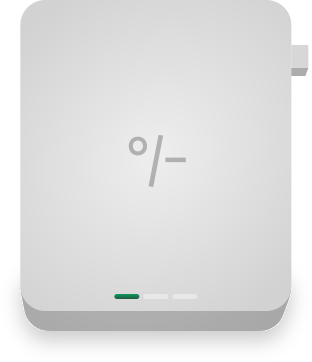

how?
read and listen at the same time
ask questions
write thoughts as you read
Books contain centuries of knowledge. But the format hasn't changed while everything else has. You're not supposed to just stare at static text for hours and hope your mind doesn't wander. You're not supposed to struggle alone when you don't understand something. That's not how your brain works. That's not how learning works.
Understanding shouldn't be something you hope for. It should be demanded. Expected. Built into the experience.
We built unreader because we were tired of abandoning books. Tired of feeling like we weren't 'real readers.' Tired of knowledge being locked away in a format that fights against how we naturally think and learn.
Books should adapt to you. Not the other way around.
get started with 30 day unlimited access
start your book